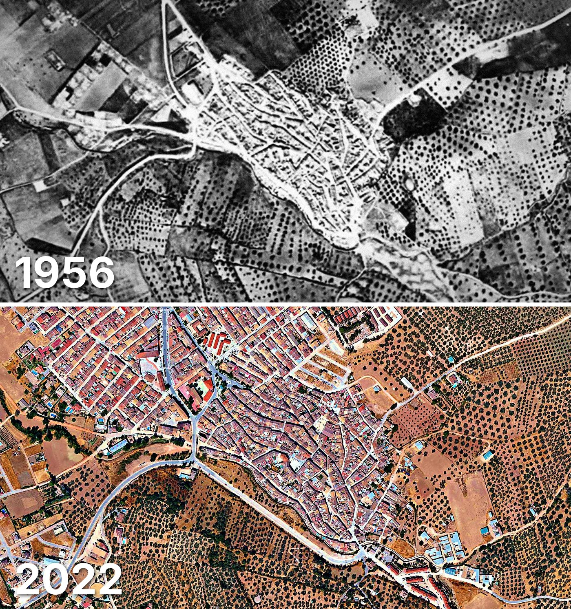

Villanueva del Rosario
Villanueva del Rosario tiene 1.680 edificios y 1.812 viviendas, y 3.470 habitantes en 2025. La mitad de sus edificios es de 1980 o posterior.
Cuándo se construyeron sus edificios
Desde 2015 se han terminado 37 edificios.

Las calles de Villanueva del Rosario con más viviendas
- Calle Arroyo · 70 viviendas
- Avenida Blas Infante · 64 viviendas
- Calle Carrera · 60 viviendas
- Calle Inés Molina · 49 viviendas
- Calle los Adoquines · 44 viviendas
- Calle Fuente · 40 viviendas
- Calle Jaén · 38 viviendas
- Calle Plaza · 36 viviendas
Toda la información de Villanueva del Rosario en CASAS.ES →
Fotos de Villanueva del Rosario para publicar
Estas fotos aéreas de Villanueva del Rosario, de 1956 y de 2022, se pueden publicar gratis en un periódico, un blog, la web del ayuntamiento o las redes, citando la fuente como se indica debajo.

Descargar: las dos juntas · 1956 · 2022 (JPG, 1.400 px de ancho)


Texto listo para publicar
Villanueva del Rosario desde el aire: así era en 1956 y así es en 2022
Las dos fotos muestran el mismo encuadre de Villanueva del Rosario con 66 años de diferencia: arriba, el Vuelo Americano de 1956; abajo, la foto aérea del PNOA de septiembre de 2022. Hoy Villanueva del Rosario tiene 1.680 edificios y 1.812 viviendas, y 3.470 habitantes en 2025. La mitad de sus edificios es de 1980 o posterior. El 23 % de sus edificios ya estaba en pie antes de 1960.
Más datos de Villanueva del Rosario en CASAS.ES: casas.es/malaga/villanueva-del-rosario
Cita para copiar
Fotos: Vuelo Americano Serie B (1956-57) y PNOA 2022, cedidos por © Instituto Geográfico Nacional (CC BY 4.0, scne.es). Datos y composición: <a href="https://casas.es/malaga/villanueva-del-rosario/">los datos de Villanueva del Rosario en CASAS.ES</a>Descarga: municipios (CSV) · calles (CSV) · Wikidata (Q643724) · cómo usarlos en Python (dev.to) · también en OSF, Figshare, B2SHARE y Mendeley Data